A Brief History of Wavelets
| 1807 | The Fourier series was dicovered, and used as a new tool for analyzing signals. This is the main branch of mathematics that paved the way to wavelets. 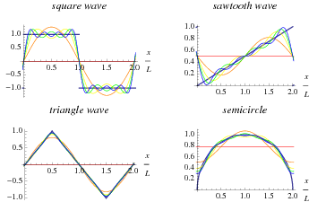 |
|---|---|
| 1873 | The first continuous periodic function where the Fourier series diverged at every point was constructed by Paul Du Bois-Reymond 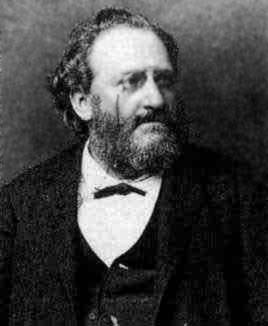 |
| 1893 | The Hadamard matrix was discovered, it is still used even today in coding for digital signals and image processing 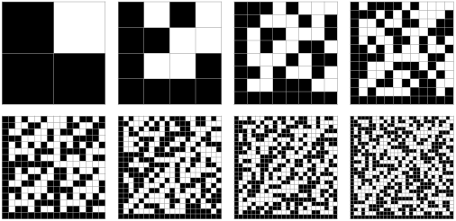 |
| 1898 | The behavior of the Fourier series at jump discontinuities of a piecewise continuous differentiable periodic function was examined, and it was found that the nth partial sum of the series had large oscillationg near these jumps. This became known as the Gibbs Phenomemon. 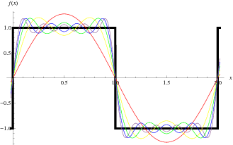 |
| 1909 | Alfred Haar introduced functions made of a simple orthonormal basis which are based on a piecewise constant function. This later became known as the Haar wavelet, the simplest wavelet, which has applications in compression of images and edge detection today. 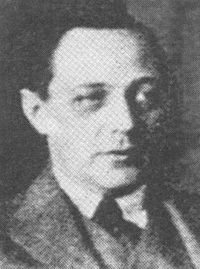 |
| 1923 | The Walsh system, a time-frequency method of signal analysis was discovered by Joseph Leonard Walsh 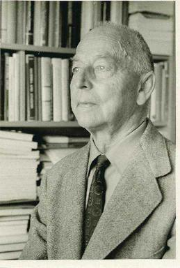 |
| 1946 | Dennis Gabor introduced the Gabor Transform, a case of the short-time Fourier Transform. This introduced the time-frequency wavelets where waves are divided into segments as an analyzing function 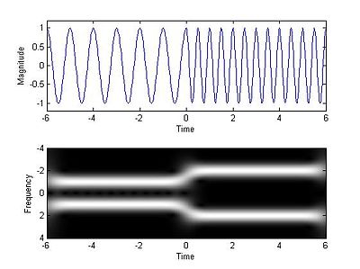 |
| 1950s | Antoni Zygmund discovered a mother wavelet that is inifinitely differentiable and rapidly decresing |
| 1975 | George Zweig discovered a version of the Continuous Wavelet Transform, the Cochlear transform |
| Late 1970s | Jean P. Morlet developed a technique called "Cycle-Octave Transform", now known as the Continuous Wavelet Transform, to gain time resolution for high frequency data while keeping good resolution for lower frequency components 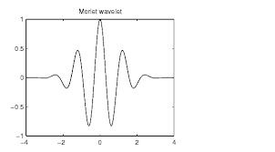 |
| 1982 | Alex Grossmann and Morlet developed the Continuous Wavelet Transform as we know it today |
| 1987 | The Daubechies wavelets, an orthonormal basis of compactly supported wavelets, was constructed by Ingrid Daubechies 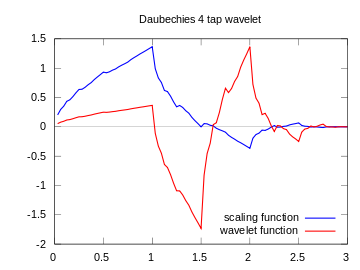 |
| 1992 | The Biorthogonal wavelets was developed, and used in the JPEG2000 compression standard
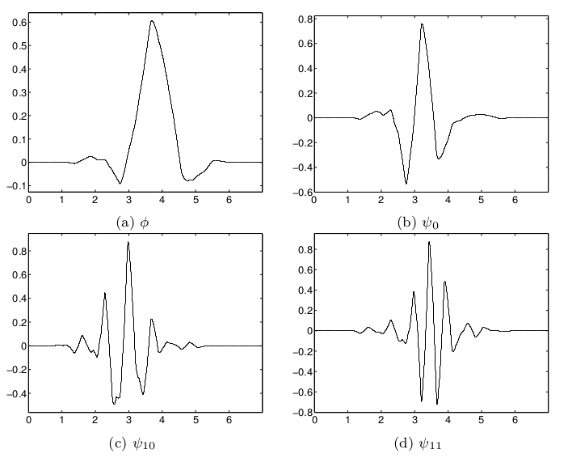 |
| 1993 | Coiflets, a symmetrical variation on Daubechies wavelets, was introduced by Daubechies 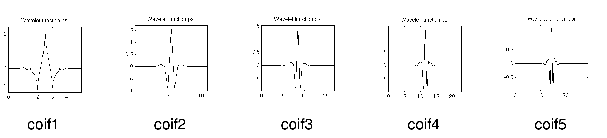 |
| 1993 | The Harmonic wavelet transform was introduced by David Edward Newlands |
| 1994 | The Lifting Scheme was developed by Sweldons, and provides an alternative way of computing wavelet coefficients while performing the wavelet transform |